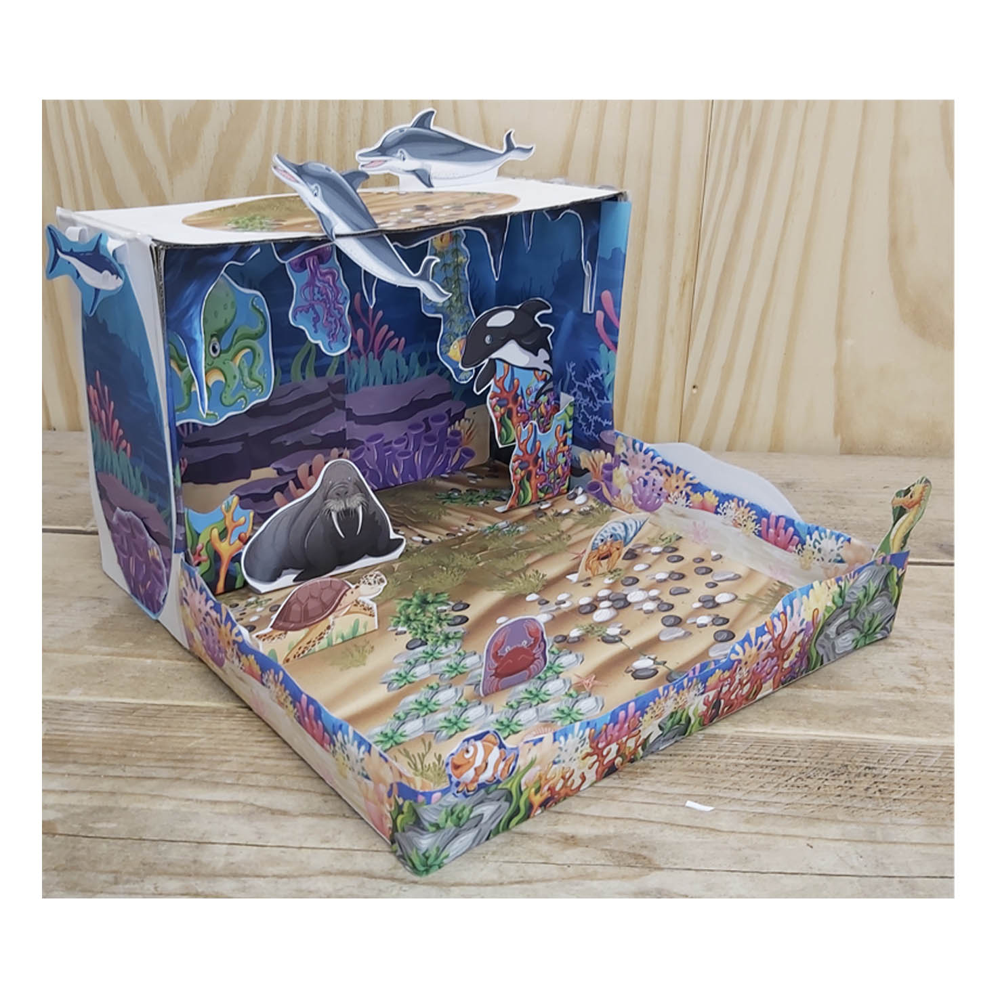
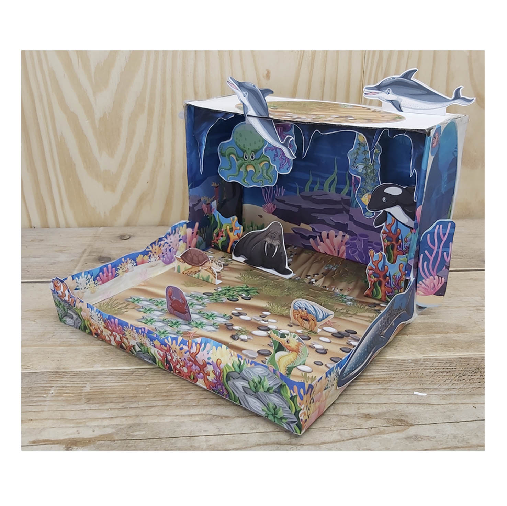
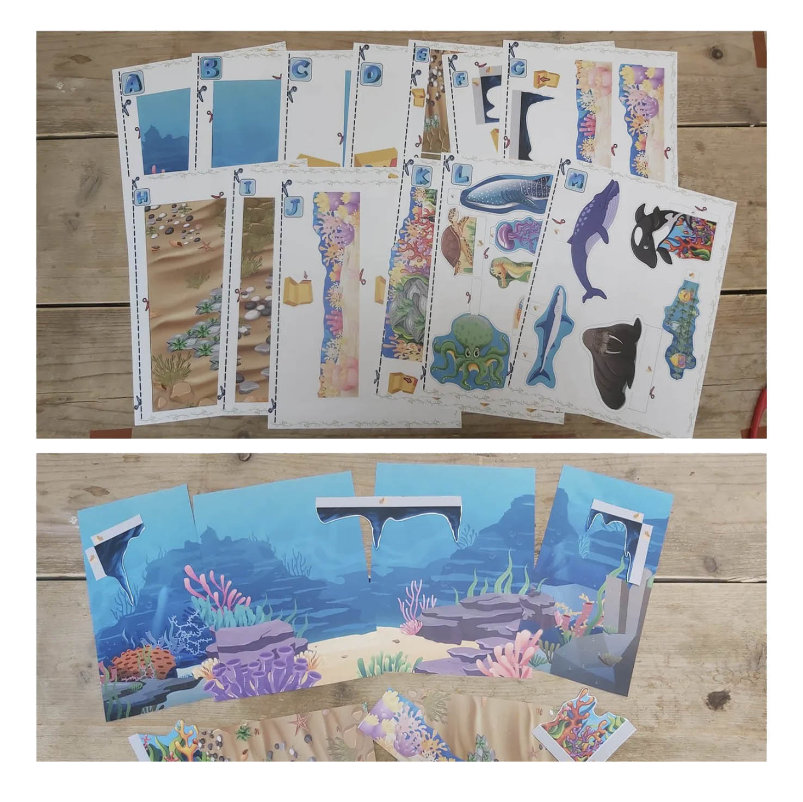
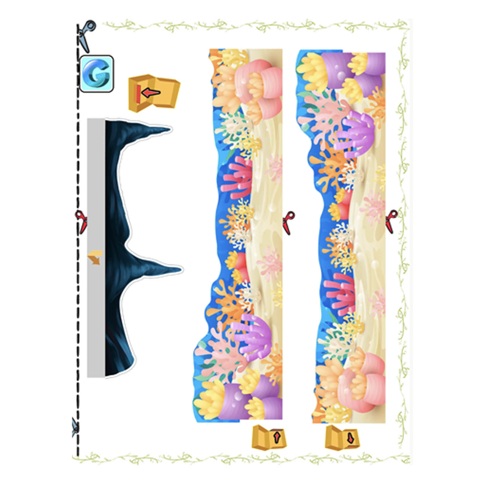
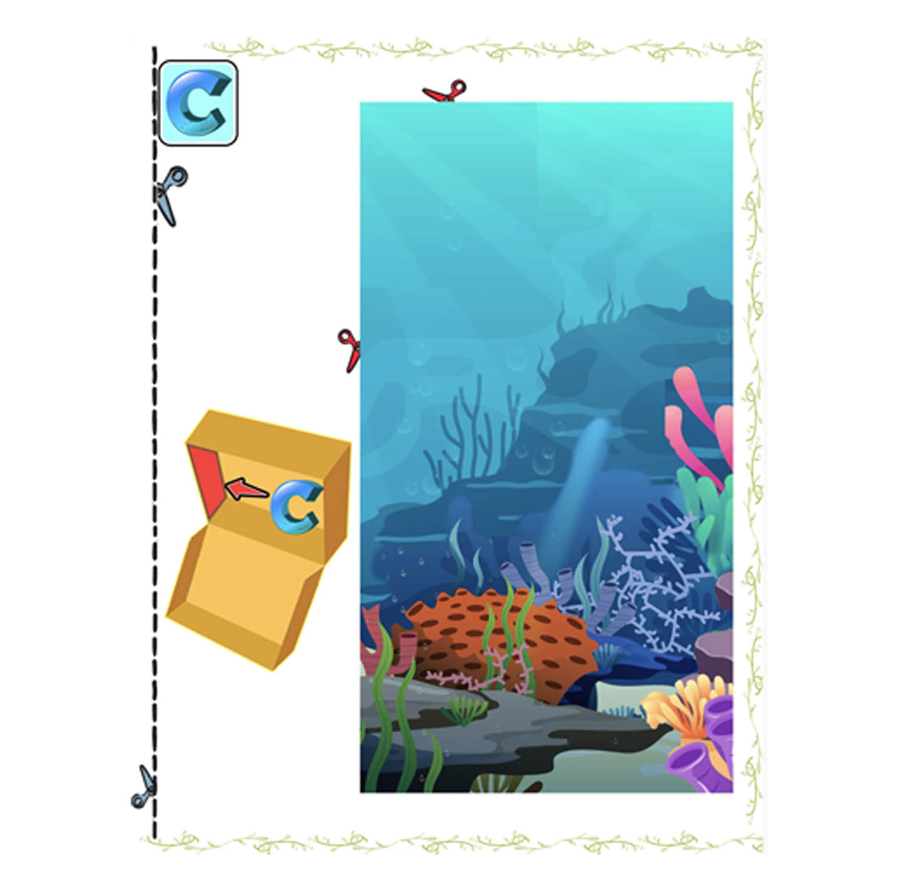
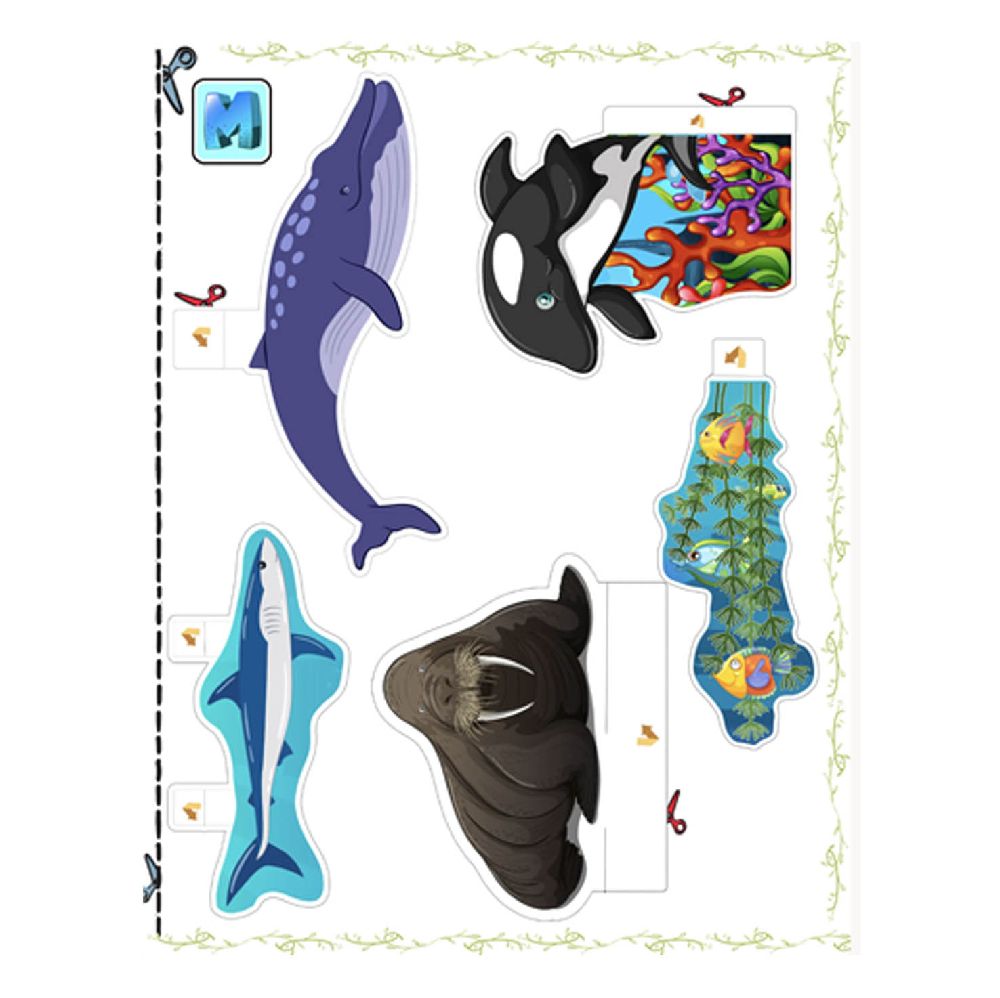
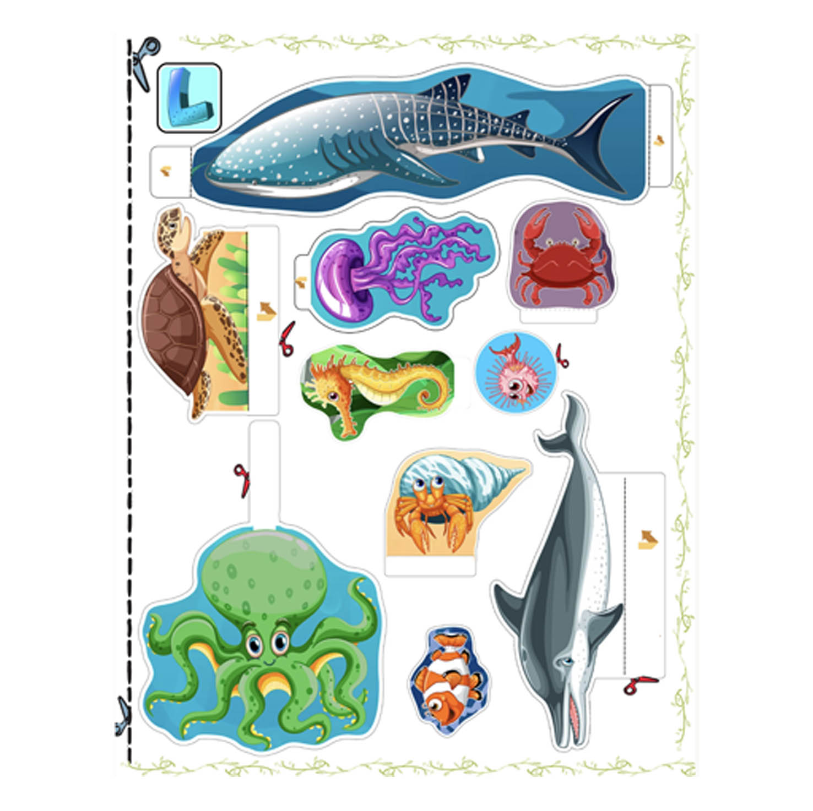

Right View
A closer look at the layered sea life, coral and underwater scenery.

Turn an ordinary shoebox into a colorful underwater world filled with fish, coral and ocean scenery. This printable paper project gives kids a fun way to explore marine life, sea habitats and ocean ecosystems.
View the Printable Kit on EtsyThe ocean is a great habitat for a shoebox project because it lets kids build a world that looks completely different from anything on land. Fish, coral and underwater scenery create a miniature environment with its own sense of depth and movement.
The finished diorama can be used for a school science project, a marine life lesson, a homeschool activity, a classroom display or simply a creative afternoon at home.
While cutting and arranging the pieces, children can think about where sea animals live, how coral provides shelter, and how different forms of marine life share the same habitat.
When the shoebox is finished, it can also become a storytelling scene, photography backdrop or miniature set for a simple stop-motion movie.
Different viewpoints show how the paper layers create depth inside the box and help the fish and coral feel like part of one underwater world.

A closer look at the layered sea life, coral and underwater scenery.

See how the different paper elements work together to build depth.
Start with printed pages, cut out the marine animals and coral, and gradually build your own underwater habitat inside a shoebox.

Print the 15 full-color pages with ocean backgrounds, fish, coral and scenery.

Cut out the coral, fish and other illustrated elements ready for assembly.
Arrange the pieces in layers and turn the box into a miniature underwater world.
These preview images show how the project starts as flat printable artwork before the pieces are cut out and built into the shoebox.



The project is designed to be visually easy to follow. Kids can see the individual fish, coral and scenery pieces before cutting them out and deciding how they fit into the shoebox.
The simple print-cut-create process makes the activity suitable for home, school or homeschool without requiring complicated craft materials.
See how the printable fish, coral and underwater scenery come together inside the finished shoebox.
The shoebox is not included. The design works best with a typical shoebox that originally held approximately US shoe sizes 8.5–10 (UK 6–7.5). Small differences in box size can easily be adjusted with extra paper, a pencil or marker.
Ocean habitats are full of different forms of life, from fish and coral to smaller creatures that depend on the underwater environment around them.
While building the diorama, kids can think about where different animals might live, why coral reefs provide shelter, and how sea life depends on water, food and safe places to hide.
The completed model can support a science lesson, marine life presentation, homeschool activity or classroom project while still being a fun creative build.
Discover more printable shoebox dioramas and compare the landscapes, wildlife and ecosystems found in different habitats.
If you need an ocean, marine life or sea habitat project for a child, the complete 15-page printable Ocean Shoebox Diorama is available as a digital download from my Etsy shop.
View the Ocean Habitat on Etsy